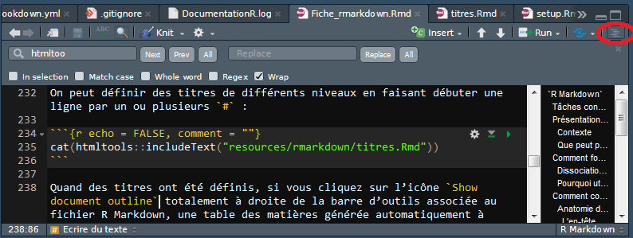
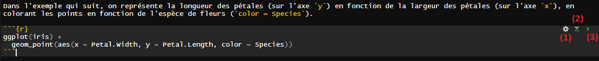
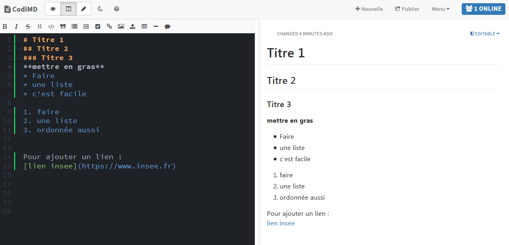
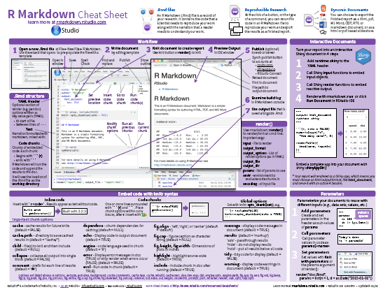

Chapitre 4 R Markdown
4.1 Présentation générale de R Markdown
Grâce au cadavre exquis du chapitre précédent, vous avez découvert le format Markdown. Le présent chapitre vise à aller plus loin dans cet apprentissage en présentant les R markdown qui sont, comme le nom l’indique, une manière de lier du texte avec du code R (permettant de produire des sorties, d’expliciter du code…)
R Markdown est une extension de R qui se présente sous la forme d’un package. R Markdown permet de produire des documents texte en y intégrant nativement des morceaux de code R (pour le rendre public, pour générer des sorties…). R Markdown permet de fluidifier le processus de rédaction d’une publication, en réduisant fortement le nombre de gestes manuels nécessaires pour inclure des graphiques ou du code dans un document: plutôt qu’avoir un code SAS ou Stata ayant généré des sorties Excel/Calc intégrées dans un document Word ou transformées en table LaTeX, on dispose d’un unique document-source qui contient à la fois le texte et les codes qui produisent les sorties du document final. L’utilisation de R Markdown facilite la production de publications reproductibles.
4.1.1 De Markdown à R Markdown
Markdown est un système d’édition doté d’une syntaxe simplifiée souvent utilisé pour faire de la documentation de projet. Le format est utilisé sur de nombreux sites internet, notamment Wikipedia, Gitlab et Stackoverflow. L’extension de ce type de fichier est .md. Markdown présente deux avantages. D’une part, il est facile d’inclure des blocs de code informatique et des équations mathématiques dans un document Markdown. D’autre part, le formatage de blocs de code est simple et très bien fait (et beaucoup plus léger qu’en LaTeX par exemple).
Comme son nom l’indique, R Markdown permet de lier du texte (Markdown) avec du code R. A la différence d’un fichier Markdown classique, un document R Markdown peut à la fois présenter et exécuter du code R, et peut donc intégrer facilement les sorties de ce code (graphiques, tableaux, cartes…). La présente documentation est ainsi entièrement rédigée avec R Markdown, comme on peut le voir en jetant un coup d’oeil au code source de cette fiche.
Voici une liste de quelques unes des options disponibles :
| Option | Valeurs | Description |
|---|---|---|
| echo | TRUE/FALSE | Afficher ou non le code R dans le document |
| eval | TRUE/FALSE | Exécuter ou non le code R à la compilation |
| include | TRUE/FALSE | Inclure ou non le code R et ses résultats dans le document |
| results | “hide”/“asis”/“markup”/“hold” | Type de résultats renvoyés par le bloc de code |
| warning | TRUE/FALSE | Afficher ou non les avertissements générés par le bloc |
| message | TRUE/FALSE | Afficher ou non les messages générés par le bloc |
Il existe de nombreuses autres options décrites notamment dans guide de référence R Markdown (PDF en anglais).
Il est toutefois possible de produire un document R Markdown sans exécuter les codes R qu’il contient (comme dans un Markdown classique). En outre, R Markdown propose de plus en plus de langages pour aller au-delà de R, parmi lesquels Python, SQL, C++…
R Markdown est une alternative aux notebooks Jupyter qui permettent de lier du code et du texte. Du point de vue de la reproductibilité des résultats, les fichiers R Markdown sont préférables car l’exécution du code dans le document est linéaire alors que les blocs de code des notebook jupyter peuvent être exécutés dans le désordre.
4.1.2 Que peut produire R Markdown ?
Il y a une grande liberté dans les formats de sortie disponibles pour un fichier Markdown. Parmi les principaux types de sorties :
- Des rapports ou articles en
pdf,html,doc,odt, etc. ; - Des présentations sous forme de slides
pdfouhtml; - Des sites web (comme celui associé à cet ouvrage ou comme la page d’accueil d’utilitR).
Pour la génération d’un document au format pdf, vous devez avoir une installation fonctionnelle de LaTeX sur votre système. Si ça n’est pas le cas, le package tinytex de Yihui Xie vise à faciliter l’installation d’une distribution LaTeX minimale quel que soit le système d’exploitation de votre machine. Pour l’utiliser il vous faut d’abord installer le package tinytex, puis lancer l”installation de LaTeX (prévoir un téléchargement d’environ 200Mo). Voici les instructions à exécuter:
4.1.3 Pourquoi utiliser R Markdown?
R Markdown présente plusieurs avantages pour la production de documents statistiques:
- L’utilisation de
R Markdownamène l’utilisateur à se préoccuper de la reproductibilité des productions statistiques. - La dissociation du fond et de la forme du document permise par
R Markdowna de nombreuses vertus, parmi lesquelles:- elle allège les mises à jour ou correctifs du texte ou du code générant des sorties;
- elle donne de la visibilité au code ayant généré les résultats et illustrations ;
- il est facile de changer le format du document final (par exemple produire un fichier
htmlplutôt quepdf), et la gestion de multiples formats de publication est peu coûteuse (puisque le document source reste le même pour tous les formats).
- Il est possible de mettre des commentaires partout dans le document, ce qui permet de détailler les résultats et les choix de méthode, et facilite le suivi de l’analyse ou l’appropriation par une personne extérieure.
- La syntaxe
R Markdowna été pensée pour avoir deux grandes qualités:- Elle est simple et rapide à prendre en main; elle est notamment beaucoup plus simple que la syntaxe
html; - Elle est très légère visuellement, ce qui fait qu’un code brut
R Markdownreste lisible même pour des personnes qui ne connaissent pas la syntaxe (contrairement àLaTeX…).
- Elle est simple et rapide à prendre en main; elle est notamment beaucoup plus simple que la syntaxe
- Lorsqu’on associe
R Markdownet un outil de versioning tel que Git, les modifications successives apportées au document sont facilement traçables, ce qui permet de:- maîtriser l’évolution du document, par exemple sur la succession de corrections, apportées tout au long d’un circuit de relecture;
- ne pas multiplier les versions d’un même document;
- combiner facilement les modifications apportées par plusieurs utilisateurs.
R Markdownest bien intégré àRstudio. Les extensions.Rmdsont reconnues automatiquement parRstudioce qui permet d’avoir de l’autocomplétion également lors de la rédaction de blocs de texte, la possibilité d’exécuter des bouts de code uniquement lors d’une phase d’exploration…
4.2 Avant de commencer
Les points de vigilance lorsqu’on débute :
R Markdownest un outil collaboratif en plus dont l’utilisation nécessite l’adhésion de l’ensemble de l’équipe.- L’ensemble des contributeurs doit donc s’approprier à la fois ses principes et sa syntaxe (hors contexte collaboratif, ses avantages demeurent pour un document réalisé seul).
- Il faut paramétrer le correcteur automatique de document. Pour le paramétrer en français, aller dans le menu
Tools > Global Options > Spellinget dans le menu déroulant Main dictionary language, sélectionner Français. - les outils ne remplacent pas la communication dans l’équipe projet. La production collaborative d’un document R Markdown nécessite de se mettre d’accord sur sa structure. Il est donc nécessaire de faire des points d’équipe. Pour vous aider, il existe un [chat Insee] (https://rocket-chat.stable.innovation.insee.eu)
Pour assurer la reproductibilité des résultats, le document doit pouvoir être généré par chacun des membres de l’équipe projet. Voici quelques bonnes pratiques pour y parvenir:
- Tout comme pour un script
R, les ressources (images, données…) doivent être appelées via des chemins d’accès relatifs au dossier du projet. Il faut donc utiliser des chemins relatifs, et non absolus:- A ne pas faire: inclure un lien vers
D:/projets_Gitlab/my_project/donnees/mesdonnees.csv; - mais faire plutôt: inclure un lien vers
./donnees/mesdonnees.csv;
- A ne pas faire: inclure un lien vers
- L’emplacement de ces ressources doit respecter une arborescence connue et utilisée par tous.
Les fichiers .Rmd s’intègrent bien avec git car il s’agit de fichiers texte. En revanche, il faut éviter de mettre sous contrôle de version les fichiers de sortie (pdf, html). Pour ce faire, on peut ajouter au fichier .gitignore les extensions associées, par exemple *.pdf ou *.html
Pour le moment, il n’existe pas d’outil pour intégrer automatiquement la charte graphique Insee dans un document Markdown. Des thèmes ggplot et des feuilles de style (template) adaptées aux différents formats de publication Insee permettraient de rédiger des publications en R Markdown. Elles seraient plus faciles à faire évoluer au fil des relectures et plus reproductibles que les publications actuellement construites sur LibreOffice.
4.3 Comment construire un document R Markdown?
4.3.1 Anatomie de la structure d’un document R Markdown
Un document R Markdown comprend deux parties principales:
- L’en-tête (YAML header) qui gère les éléments de style;
- Le contenu qui gère le fond et permet d’alterner librement texte et code.
4.3.1.1 L’en-tête
L’en-tête d’un document R Markdown (arfois appelé YAML header) est délimité par deux lignes de pointillés et contient les métadonnées du document (titre, auteurs, options générales de mise en page…). Il contient au minimum le titre du document et le format de sortie. Il peut être enrichi d’autres champs pour modifier certaines métadonnées (par exemple la date) ou le style du document compilé. Voici un exemple d’en-tête:
---
title: "Produire des documents avec R Markdown"
author: "Daffy Duck"
date: "2022-06-13"
output:
html_document:
keep_md: true
self_contained: true
bibliography: book.bib
description: "Un document où je révèle que je ne suis pas un canard"
---Les éléments obligatoires sont présents (titres et format de sortie, dans le cas un livre) mais de nombreux champs supplémentaires peuvent être ajoutés. Par exemple, les références bibliograhiques sont listées dans un fichier séparé et c’est R Markdown lui-même qui se charge de la mettre en forme et de la lier à des références dans le texte.
4.3.1.2 Corps d’un document R Markdown
Le corps d’un document R Markdown comprend deux types de blocs, qu’on peut alterner librement:
- Des blocs de texte brut mis en forme selon la syntaxe markdown;
- Des blocs de code
R(appelés chunks) encadrés par les balises ```:- ces chunks peuvent être nommés (il est même recommandé de le faire);
- des options peuvent être spécifiées. Ces options (détaillées plus bas) permettent par exemple de ne pas faire figurer l’output du code dans le document final ou inversement de ne montrer que l’output du code et non le code l’ayant généré.
Il est possible d’ajouter en dessous de l’en-tête un tout premier chunk nommé setup, qui permet de définir des options par défaut pour tous les chunks du document. Par exemple, on peut souhaiter par défaut ne pas afficher le code R de chaque bloc dans le document final.
```{r setup, include=FALSE}
knitr::opts_chunk$set(echo = TRUE)
```4.3.2 Ecrire des blocs de texte en R Markdown
Le corps d’un document contient presque toujours des blocs de texte
qui suivent la syntaxe Markdown. Voici un exemple:
Ceci est du texte avec *de l'italique* et **du gras**.
On peut définir des listes à puces :
- premier élément
- deuxième élémentCe code génèrera le texte mis en forme suivant :
Ceci est du texte avec de l’italique et du gras.
On peut définir des listes à puces :
- premier élément
- deuxième élément
On peut définir des titres de différents niveaux en faisant débuter une ligne par un ou plusieurs # :
# Titre de niveau 1
## Titre de niveau 2
### Titre de niveau 3Quand des titres ont été définis, si vous cliquez sur l’icône Show document outline totalement à droite de la barre d’outils associée au fichier R Markdown, une table des matières générée automatiquement à partir des titres s’affiche et vous permet de naviguer facilement dans le document :

La syntaxe Markdown permet d’autres mises en forme, comme la possibilité d’insérer des liens ou des images. Par exemple, le code suivant :
[Exemple de lien](https://example.com)Prendra la forme suivante, une fois compilé :
Dans RStudio, le menu Help > Markdown quick reference donne un aperçu plus complet de la syntaxe.
La version 1.4 de Rstudio qui devrait devenir version officielle d’ici peu,
propose de nombreux outils pour faciliter l’édition de fichiers R Markdown.
La principale innovation est
l’éditeur visuel de Markdown
qui propose une pré-visualisation du document compilé en live mais aussi
des fonctionnalités qui facilitent l’écriture de Markdown
(correcteur orthographique amélioré, ajout de citations bibliographiques
facilité, plus de raccourcis claviers, etc.).
En attendant l’officialisation de cette version,
l’addin Remedy facilite l’écriture de fichiers R Markdown grâce à un
menu qui permet de cliquer directement sur le type de balise désiré:

Présentation de l’addin disponible sur github
Pour l’installer
Pour compter le nombre de mots dans un fichier .Rmd, on peut utiliser le
très pratique addin nommé Wordcountaddin:
4.3.3 Insérer un résultat R dans du texte
Pour renforcer la reproductibilité d’un document R Markdown, il est possible de faire appel à R pour insérer des résultats dans du texte. C’est le principe du inline code dans R Markdown.
Il suffit, pour cela, d’adopter la structure suivante: r 2+2. Le résultat sera automatiquement inséré par R en substitution de l’expression. r
2 + 2 =
`r 2+2`
deviendra ainsi
2 + 2 = 4
4.3.4 Ecrire des blocs de code
4.3.4.1 Insérer un bloc de code
Outre du texte libre au format Markdown, un document R Markdown peut également contenir du code R. Celui-ci est inclus dans des blocs (chunks) délimités par la syntaxe suivante :
```{r}
x <- 1:5
```Vous pouvez utiliser le menu Code > Insert Chunk de Rstudio ou utiliser le raccourci clavier Ctrl+Alt+I pour automatiquement insérer un bloc R à remplir. Quand votre curseur se trouve dans un bloc, vous pouvez saisir le code R que vous souhaitez, l’exécuter, utiliser l’autocomplétion, etc… exactement comme si vous vous trouviez dans un script R. Vous pouvez également exécuter l’ensemble du code contenu dans un bloc à l’aide du raccourci clavier Ctrl+Maj+Entrée.
4.3.4.2 Exécuter des blocs de code
Dans RStudio les blocs de code R sont en général affichés avec une couleur de fond légèrement différente pour les distinguer du reste du document. En haut à droite du bloc, des boutons sont disponibles si on désire:
- ajouter des options au bloc;
- exécuter tous les blocs avant celui-ci;
- exécuter ce bloc exclusivement.

Lorsque le document est compilé au format HTML, PDF ou docx, chaque bloc est exécuté tour à tour, et le résultat inclus dans le document final, qu’il s’agisse de texte, d’un tableau ou d’un graphique. Les blocs sont liés entre eux, dans le sens où les données importées ou calculées dans un bloc sont accessibles aux blocs suivants. On peut donc aussi concevoir un document R Markdown comme un script R dans lequel on aurait intercalé des blocs de texte au format Markdown.
Le bouton Knit ou le raccourci clavier CTRL+SHIFT+K lancent automatiquement l’exécution du code R dans une nouvelle session. Cela signifie que les objets appartenant à l’environnement global de l’utilisateur sont ignorés, par défaut. C’est une bonne pratique parce qu’elle aboutit à des documents plus reproductibles.
Par défaut, la commande rmarkdown::render n’utilise pas cette option. Si le fichier R Markdown est compilé en utilisant rmarkdown::render, il est recommandé d’utiliser la syntaxe rmarkdown::render(..., envir = new.env())
Par défaut, dans Rstudio, le résultat du bloc de code ne s’affiche pas dans la console mais sous le bloc, dans l’interface visuelle du document. Si vous n’appréciez pas ce fonctionnement, vous pouvez le modifier de la façon suivante: aller dans le panneau Tools > Global Options..., onglet R Markdown, puis décocher l’option Show output inline for all R Markdown documents.
4.3.4.3 Définir les options des blocs de code
Il est possible (et recommandé) de nommer un bloc en utilisant un label avant les options. Le nom du bloc se place dans la première ligne du bloc, juste après la lettre r: {r nom_du_bloc}.
Un point important est que deux blocs ne peuvent pas porter le même nom, il faut donc être rigoureux dans le choix du nom. Nommer les blocs de code présente plusieurs avantages :
- en cas d’erreur lors de la compilation du document,
Rdonne le nom du bloc qui provoque l’erreur. Avec des blocs non nommés, on a pour seule informationunnamed-chunk-XXce qui rend difficile d’identifier la source de l’erreur dans un document très long; - le bloc peut facilement être retrouvé dans l’arborescence Rstudio (voir capture d’écran).

Le nom des blocs figure dans l’arboresence Rstudio
Outre un nom, on peut passer à un bloc une série d’options sous la forme option = valeur. Ces options permettent de contrôler le comportement du bloc lors de la compilation du document. Les blocs de code acceptent de nombreuses options. Les principales options sont les suivantes:
| Option | Valeurs possibles | Valeur par défaut |
|---|---|---|
| echo | TRUE/FALSE |
TRUE |
| eval | TRUE/FALSE |
TRUE |
| include | TRUE/FALSE |
TRUE |
| results | 'hide'/'asis'/'markup'/'hold' |
'markup' |
| error | TRUE/FALSE |
TRUE |
| warning | TRUE/FALSE |
TRUE |
| message | TRUE/FALSE |
TRUE |
cache mis à TRUE permet de mettre le résultat du chunk en cache. En effet, il est à la fois coûteux et inutile d’exécuter certaines instructions R à chaque fois (l’importation de grosses tables par exemple). Dans ce cas, au moment d’une première exécution, le résultat d’un chunk peut être mis en cache, c’est-à-dire en mémoire grâce à l’option cache = TRUE. Attention si vous utilisez le cache : vous ne devez jamais le pusher sur GitLab et donc ajouter la ligne *_cache/ au fichier .gitignore de votre projet.
Voici un exemple de bloc avec un nom et des options :
```{r mon_bloc, echo = FALSE, warning = TRUE}
x <- 1:5
```Dans ce bloc, l’option echo = FALSE implique que le code R n’est pas inséré dans le document compilé, et que seul le résultat du code est visible; l’option warning = TRUE implique que les éventuels avertissements générés par l’exécution du code sont insérés dans le document compilé.
Les options permettent également de contrôler la nature de la sortie R. En particulier, les options fig.height et fig.width permettent de définir la taille de la sortie. Par exemple, le bloc suivant génèrera un graphique plus large que haut:
```{r, fig.width=12, fig.height=8}
hist(iris$Sepal.Length)
```
alors que le bloc suivant génèrera une figure aux dimensions différentes:
```{r, fig.width=6, fig.height=12}
hist(iris$Sepal.Length)
```
Exercice 1: Créer un fichier R Markdown produisant la sortie suivante :
⚠️ Ne pas écrire la date avec du texte mais utiliser une mise en forme appropriée avec du code inline de la date détectée par R (Sys.Date()) avec la fonction format
4.3.4.4 Appeler un script
Afin de mieux organiser son code, un même projet peut avoir plusieurs scripts. Même s’il est possible d’utiliser la fonction source() dans un document R Markdown, cette pratique n’est pas recommandée. Dans ce cadre, il est préférable d’utiliser l’option code pour le chunk.
Voici un exemple qui appelle un script R qui installe et charge des packages:
```{r, message=TRUE, echo=TRUE, code=readLines("./pgm/librairies.R", encoding="UTF-8")}
```# on charge les librairies
# ------------------------------------------------------------------------------------------------
# install.packages("questionr")
# install.packages("datasets")
# install.packages("gmodels")
# install.packages("tidyverse")
# install.packages("rio")
# library("rio")
# library("questionr")
# library("datasets")
# library("gmodels")
# library("tidyverse")
# library("knitr")4.3.5 Insérer de beaux tableaux
Avec la fonction kable du package knitr on peut produire de beaux graphiques. On peut aussi utiliser le package kableExtra qui permet d’aller plus loin dans la customisation du tableau.
Exemple avec le jeu de données Insee histoires de vie 2003 (hdv2003) inclus directement dans le package questionr. Avant de commencer, on va utiliser le pipe du package magrittr, plutôt que d’attacher le package (cf. Section ??, on va uniquement importer la fonction %>% grâce au package import:
- Sans fonction
kable:
data(hdv2003, package = "questionr")
res <- hdv2003 %>%
dplyr::group_by(bricol, cuisine) %>%
dplyr::summarise(sum = round(sum(poids)))## `summarise()` has grouped output by 'bricol'. You can override using the
## `.groups` argument.res## # A tibble: 4 × 3
## # Groups: bricol [2]
## bricol cuisine sum
## <fct> <fct> <dbl>
## 1 Non Non 4052227
## 2 Non Oui 2491878
## 3 Oui Non 2304623
## 4 Oui Oui 2222498- Avec l’instruction
knitr::kable:
knitr::kable(res, caption = "hdv2003 - bricol x cuisine - affichage avec la fonction kable")| bricol | cuisine | sum |
|---|---|---|
| Non | Non | 4052227 |
| Non | Oui | 2491878 |
| Oui | Non | 2304623 |
| Oui | Oui | 2222498 |
Exercice 2
Modifier le fichier précédent en ajoutant une instruction R pour ajouter un tableau de votre choix.
Vous pourrez par exemple utiliser les données mtcars.
4.4 Conclusion
- Réaliser un document
R Mardownest simple, mais la visualisation du résultat final requiert une étape de compilation du fichier.Rmd;- Un fichier
.Rmdmélange :
- du texte balisé selon la syntaxe
Markdown;- des bouts de code
R;- Le résultat d’une instruction
Rpeut soit s’insérer directement dans le texte, soit être contenu dans un bloc de code appelé chunk.
Pour aller plus loin sur certains aspects, notamment sur la question des
modèles de documents, vous pouvez vous référer à la fiche sur
R Markdown dans la documentation utilitR.
- Il existe un éditeur de
Markdown(pas deR Markdown) sur la plateforme innovation:CodiMD. L’avantage deCodiMD, permet de visualiser immédiatement le résultat sur le même écran.

Vous pouvez consulter la Cheat sheet R Markdown disponible sur le site de R Studio.

4.5 Pour aller plus loin
- Les ouvrages Cookbook R Markdown et R Markdown Definitive Guide;
- Le manuel de référence bookdown;
- La partie
R Markdownde la formation Travail collaboratif avecR; - Guide de la syntaxe
R Markdown; R Markdown Cheatsheet- Cours de Julien Barnier sur le sujet;
- Chapitre sur le sujet dans le livre
RFor Data Science; - Tutoriel de ThinkR sur les tableaux
4.1.4 Comment fonctionne
R Markdown?4.1.4.1 Dissociation du fond et de la forme
R Markdowndissocie le fond et la forme du document, contrairement aux logiciels de type Office qui fonctionnent selon le principe du WYSIWYG (What you see is what you get). Le fichier.Rmdcontient donc à la fois le texte brut et des commandes de mise en forme. On parle de WYSIWYW (What you see is what you want). Le fichier est composé de texte brut et éventuellement de code informatique, et doit être compilé pour produire le fichier de sortie. Le document final ne peut être visualisé qu’après compilation. A noter que les illustrations (graphiques, tableaux, cartes) peuvent être générées dynamiquement à partir des blocs de codeRintégrés dans le documentRmd, ou insérées par des liens.Les connaisseurs du format
LaTeXreconnaîtront une grande proximité entreLaTeXetMarkdown. En effet, dans les deux cas, la mise en forme est appelée par des commandes spéciales. Toutefois,Markdownse distingue deLaTeXpar des commandes de mise en forme beaucoup plus légères. Par exemple, il faut utiliser la fonction\textit{italique}enLaTeXpour mettre du texte en italique, alors qu’enMarkdownil suffit de mettre le texte entre deux astériques*italique*.4.1.4.2 Comment
R Markdownproduit-il un document?La compilation d’un document
R Markdownse déroule en deux étapes qui sont gérées de manière interne par le packagermarkdown:.Rmd(R Markdown) en.md(Markdown): le packageknitrse charge de transformer le texte et les sortiesRen un documentmarkdownstandard..mden un format de sortie standard (html,pdf, etc.): tâche effectuée par le logiciel nommépandoc. Ce dernier est automatiquement installé lorsqu’on a installé le packagermarkdown, il n’y a donc pas à le télécharger.Interaction entre rmarkdown et ses dépendances, emprunté à utilitR
Pour obtenir la sortie désirée d’un document
R Markdownon peut utiliser deux méthodes:Knitde Rstudio convient bien:rmarkdown::renderpour générer de manière automatique un fichierR Markdown.